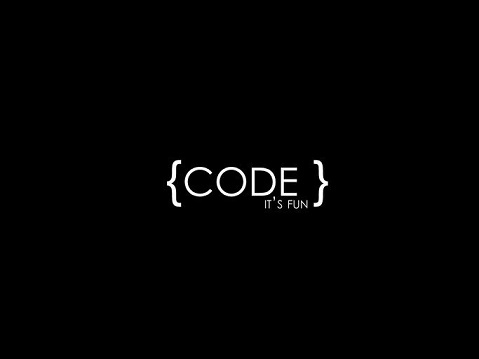

前端的自我修养
- 外形：
- 1)格子衫/纯色上衣
- 2)牛仔裤
- 3)背包[黑色]
- 4)球鞋[黑、灰、白]
- ...
- 技能：
- 1)HTML
- 2)CSS
- 3)Javascript
- 4)开发工具/调试技巧/业内标准/交互/设计...
- ...

- 口头禅：
- 强刷一下
- 换个浏览器试试
- 我这儿是好的
- ...
- 天敌：
- IE6/7/8

定义
与交互/视觉设计师协作，根据设计图完成页面制作。
维护及优化网站前端性能。
使用JavaScript编写封装良好的前端交互组件。
对Web项目的前端实现方案提供专业指导及监督。
对新人及相关开发人员进行前端技能培训
设计并实施全网前端优化。
成长
如何成长为一名靠谱儿 的前端工程师？
阶段一：
能用html+css把页面做出来，能用JS实现动态效果。
阶段二：在1的基础上保证浏览器兼容性。

阶段三：在2的基础上开始出现代码洁癖，代码逐渐趋向简洁高效

阶段四：在3的基础上开始关注语义性、可用性和可重用性

阶段五：在4的基础上开始关注页面性能

阶段六：在5的基础上开始费劲脑汁寻思怎么能把开发效率也提升上来

阶段七：HTML5来了，前端MVC也有了，进入了大前端时代，开始新一轮学习，妥妥的...

优秀/卓越